了解我的人格特质与性格画像

外向 · 直觉 · 情感 · 感知 · 起伏不定
我属于高外向型人格，更喜欢从与人交往、社交互动、集体活动中获取能量，乐于主动结识新朋友，擅长表达自身想法，性格开朗热情，不喜欢独处压抑的环境。在团队中积极活跃、善于沟通带动氛围，愿意主动交流分享，待人真诚大方，乐于参与集体事务，适应多人社交场景，拥有很强的亲和力与感染力。
我的远见直觉占比56%，相比现实细节，更擅长思考未来、联想想象、洞察事物深层含义与发展可能性。不局限于眼前现状，喜欢畅想未来规划、探索新鲜创意与新奇想法，思维灵活跳跃，富有想象力与创造力，擅长发散思考，对未知事物充满好奇，擅长捕捉灵感、挖掘事物背后的规律与长远趋势。
情感型占比高达91%，是人格核心特质。做选择时优先考虑人情、感受、共情他人情绪，心思细腻温柔，同理心极强，善于换位思考，在意他人心情与人际关系和谐。做事感性温柔、善良体贴，重视温暖真诚的相处模式，容易感知身边人的情绪变化，懂得包容体谅他人，看重情感联结，不喜欢冰冷理性、生硬冷漠的处事方式。
随性展望型占比52%，喜欢灵活自由、轻松多变的生活节奏，不喜欢死板严格的计划与束缚。乐于接受变化，擅长随机应变，适应能力强，做事随性松弛，愿意保留更多可能性，不急于下定论。生活与学习中灵活变通，思维开放自由，享受探索新鲜事物，讨厌刻板约束，擅长灵活应对突发状况。
动荡型人格占比85%，内心敏感细腻，情绪丰富细腻，自我要求较高，容易反思自我、在意他人看法，情绪波动相对明显。对待事情认真上心，容易多想、思虑周全，同时也拥有很强自我成长动力，愿意不断调整自己、完善自身，内心柔软细腻，情感丰富饱满，富有共情力与细腻的内心世界。
热爱生活 · 探索世界
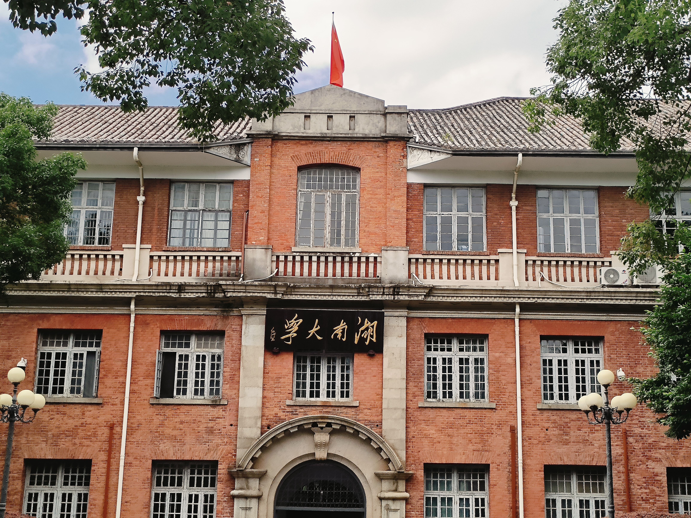
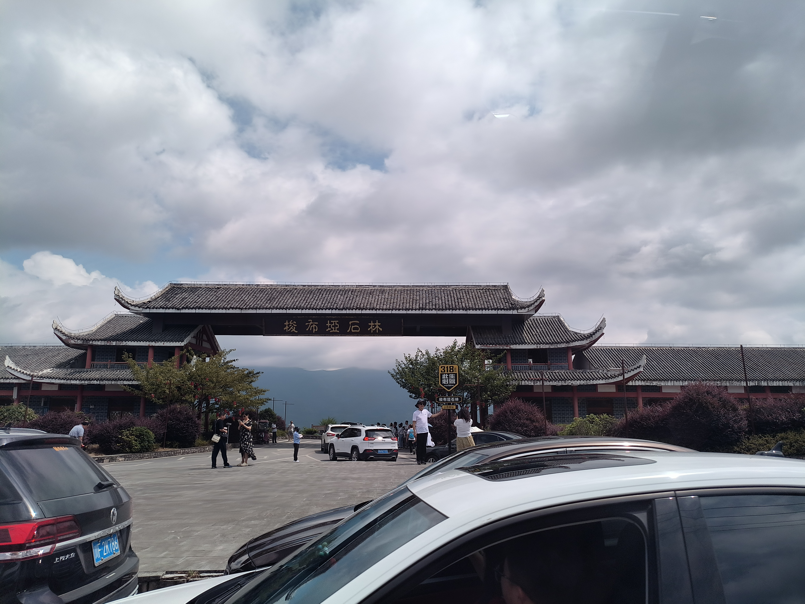
我热爱在课余闲暇时光外出旅行，乐于走遍各地领略不同地域的人文风貌与民俗风情，用心感受山河辽阔、市井烟火，用镜头与文字记录沿途美好风光。在旅途之中拓宽眼界格局、增长见识阅历，舒缓身心压力、调节心态情绪，同时不断提升自身共情能力与眼界格局，以更加包容开阔的心态面对学习与生活。
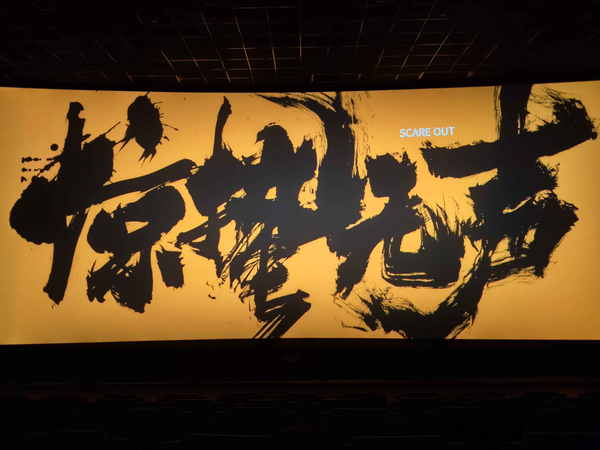
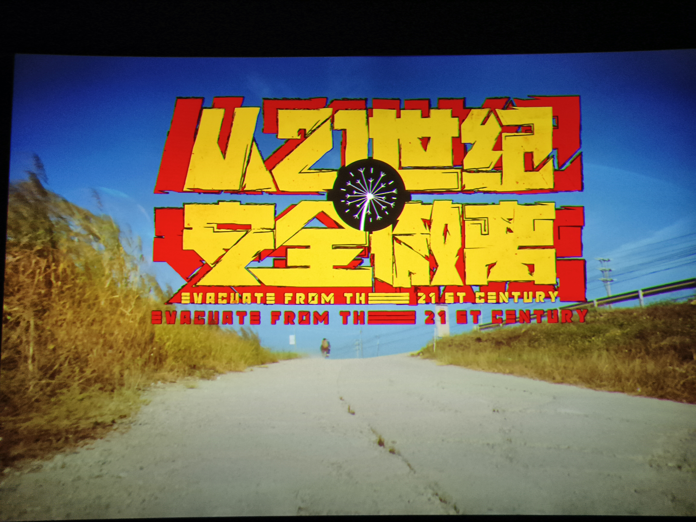
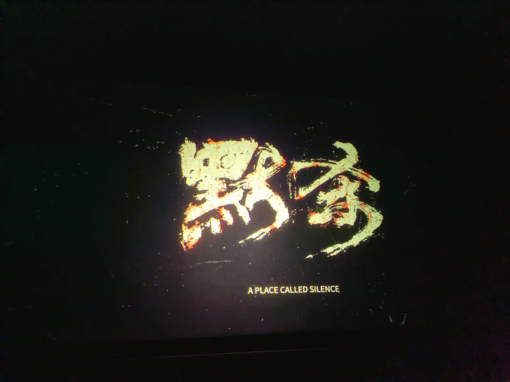
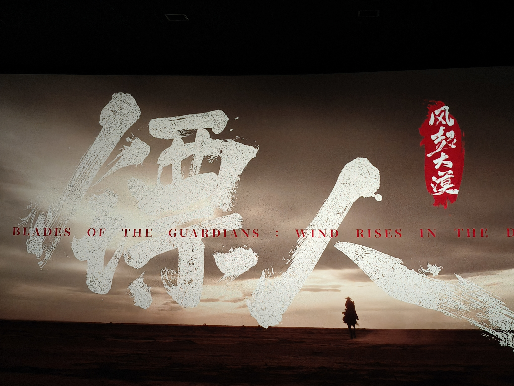
我热衷于观看不同类型的电影，涵盖剧情、悬疑、温情、现实等多种题材，始终享受在光影故事中沉浸式感受多元人生的过程。我喜欢跟随影片镜头，走进不同角色的生活轨迹，体会他们的喜怒哀乐与成长蜕变，在他人的故事里感悟生活的多样性与复杂性。品味影片的镜头语言、叙事手法与剧情表达，感受光影艺术与故事表达结合的独特魅力。
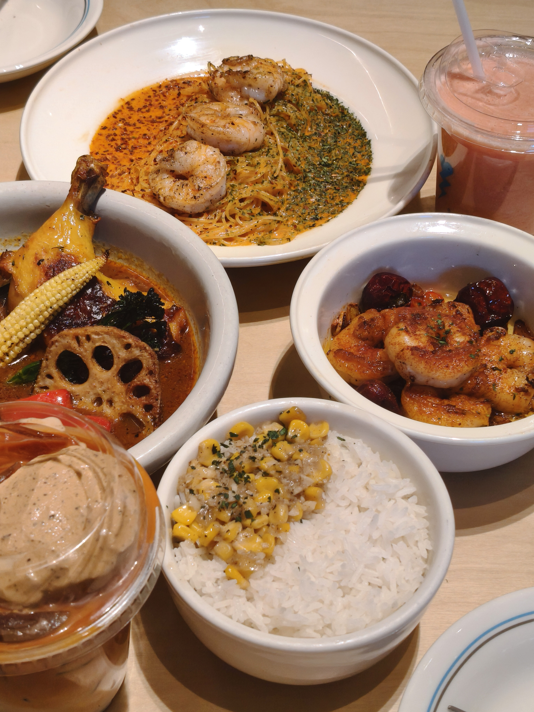
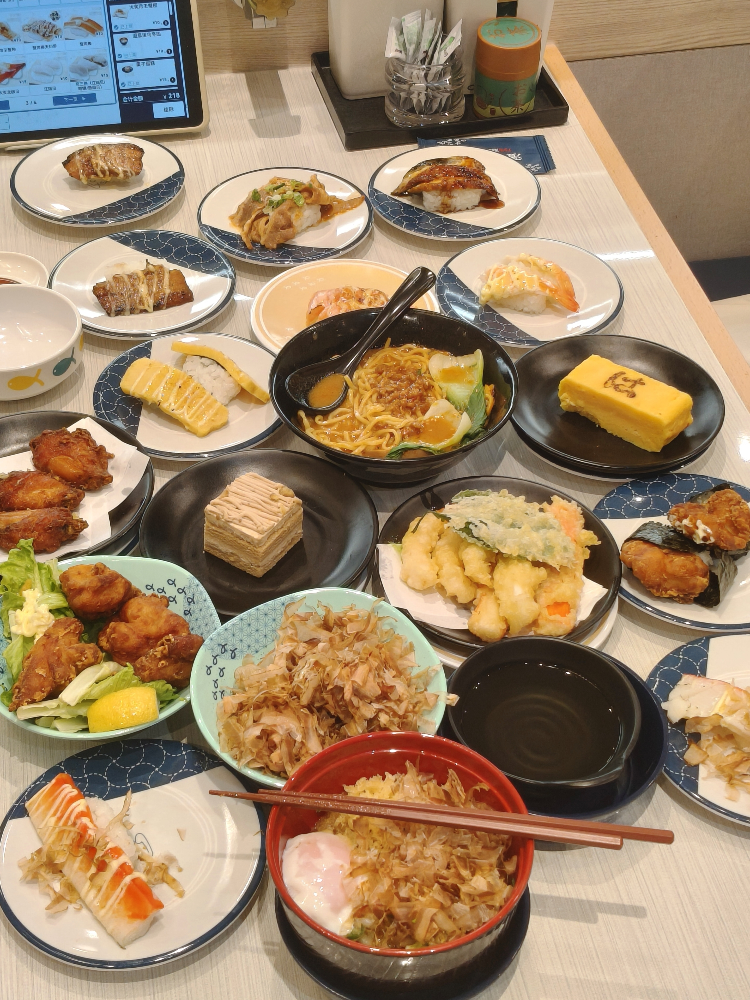
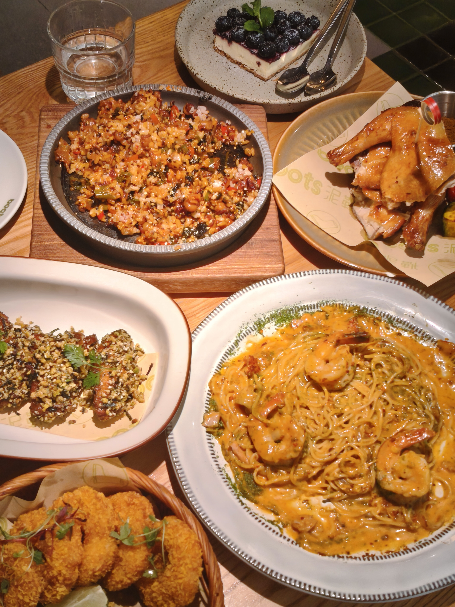
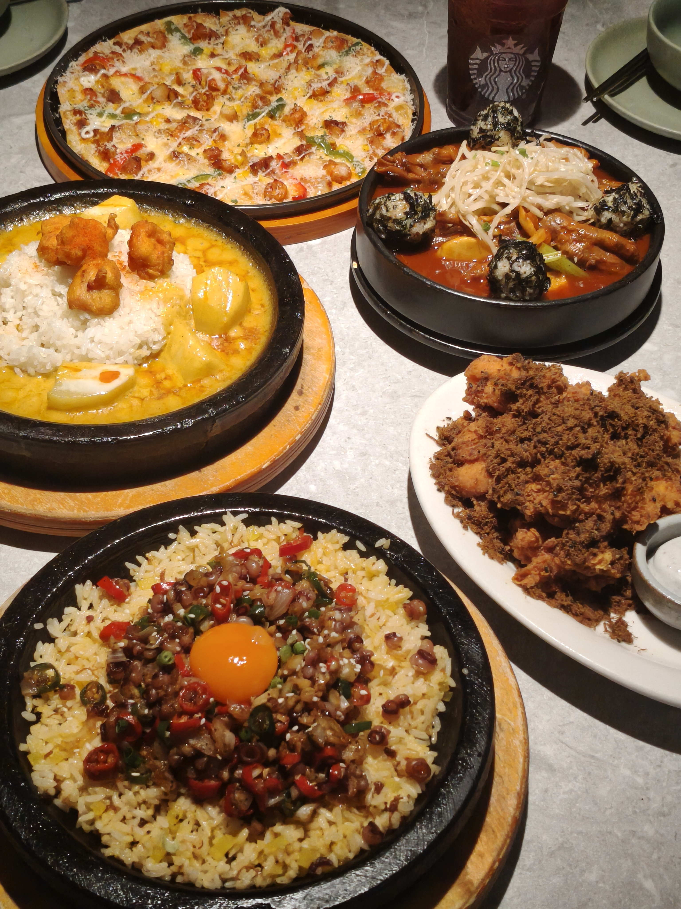
我热衷于探索和品尝各类美食，无论是街头巷尾的特色小吃，还是精致餐厅的创意料理，都能让我感受到生活的美好。我喜欢尝试不同地域的菜系，了解其背后的文化渊源和烹饪技艺，从酸甜麻辣的丰富口味中体验多元的饮食文化。品尝美食不仅是味蕾的享受，更是一种探索世界、感受生活温度的方式。
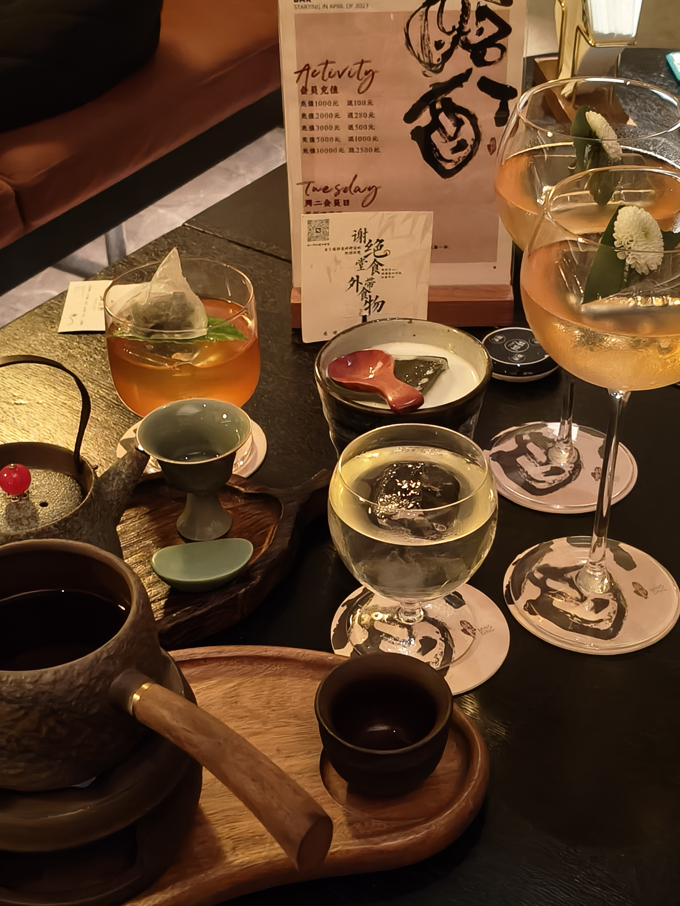
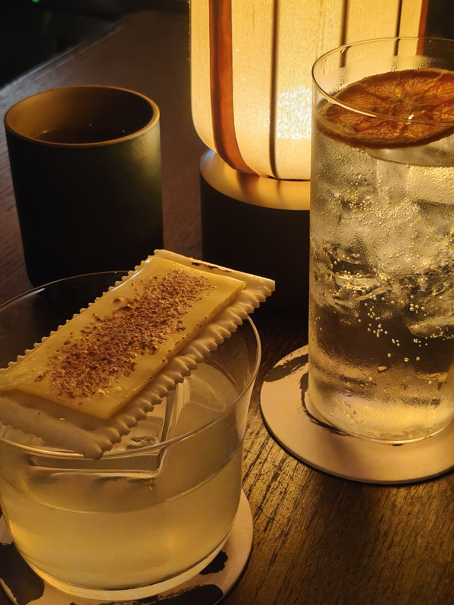
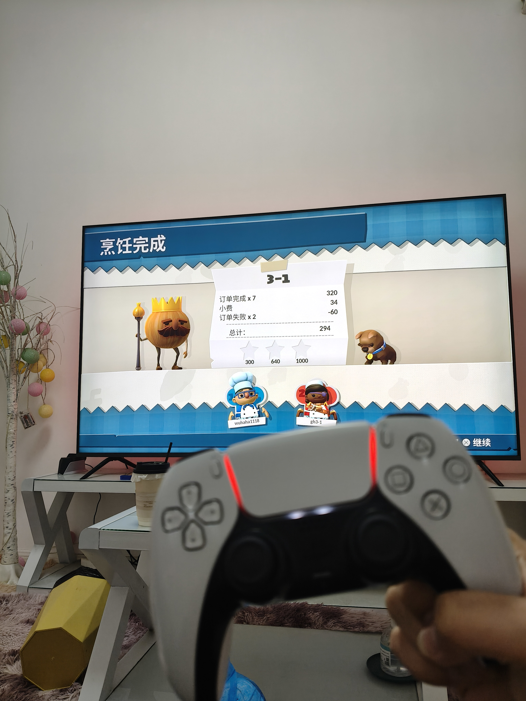
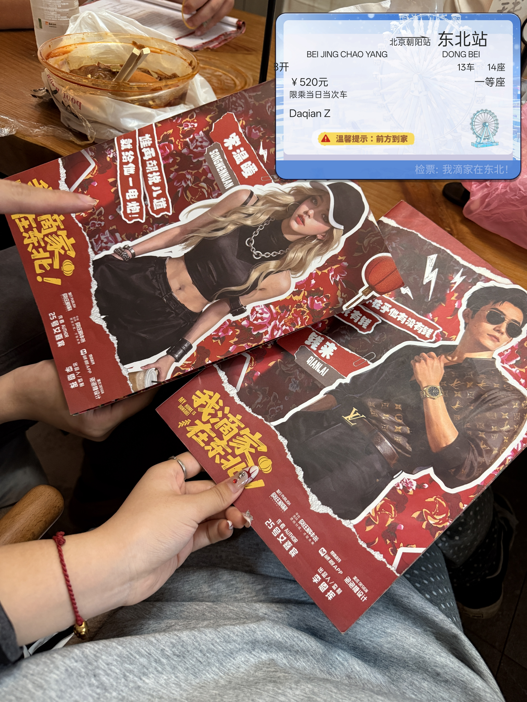
我非常享受与朋友们一起玩剧本杀和聚会的时光。剧本杀不仅能锻炼我的逻辑推理能力和角色扮演能力，还能在充满悬念和趣味的故事中与伙伴们互动协作，体验不同的人生百态。聚会则是维系友谊、放松心情的绝佳方式，大家围坐在一起分享生活、交流心得，让我感受到温暖和归属感。
持续学习 · 不断精进
严于律己 · 甘于奉献
我为人性格开朗从容、处事沉稳内敛，做事踏实严谨、责任心强，拥有良好的人际沟通能力与团队协作意识，善于配合统筹、高效完成各项事务。学习方面态度端正自律，勤奋上进、精益求精，坚持将专业理论与实践应用相结合，不断查漏补缺、深耕专业知识，持续提升个人综合素养与专业实操能力。在集体与日常事务中严于律己、认真负责，执行力强、处事周到，积极主动配合完成各项工作，热心服务身边同学，甘于奉献担当，具备较强的集体荣誉感与务实靠谱的处事作风。
认真负责团员日常管理、团费规范收缴、团员档案信息整理更新、团内资料归档上报等基础工作，积极策划开展各类主题团日学习活动，按时完成团组织各项任务，扎实做好团员思想引领与团务日常事务。
统筹班级各类文体、学风及团建活动策划、流程安排与现场落地执行，精准做好各项通知下发、人员统筹协调、班级内务统筹对接等工作，能够合理规划分工、有序推进活动开展，在长期学生工作中不断锻炼提升自身统筹规划、沟通协调与综合组织能力。
期待与你交流